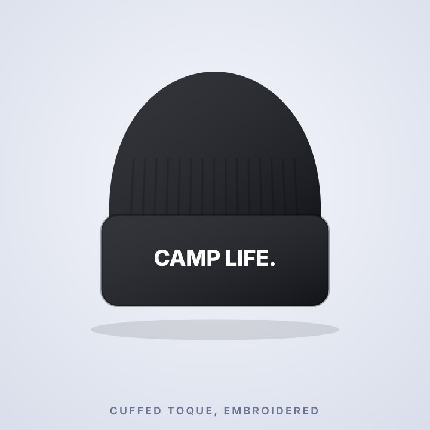

Latest data: September 2026
Alberta oil2,631 thousand bbl/d+6.6% on a year earlier
Alberta gas13,540 MMcf/d+4.0% on a year earlier
Saskatchewan oil436 thousand bbl/d+4.1% on a year earlier
BC gas8,099 MMcf/d+11.4% on a year earlier
Explore every month · Read the September snapshot · Download the data
Latest analysis
November 2026How fast do new wells decline in their first year?
A typical new Alberta oil well is producing about 40% of its early peak rate a year in; Saskatchewan oil 38%, Alberta gas 50%. The shape barely changed from 2022 to 2025.
New: our monthly analysis articles are on Substack and MediumPlain-language write-ups of every monthly snapshot and analysis, with the key numbers up front. Subscribe on Substack for email, or follow on Medium.
The Tidywells shop
Hoodies, toques, hats, mugs and stickers for people who work in oil and gas, plus posters drawn from real data.

Hoodie
Build the Pipeline

Hoodie
Ottawa Doesn't Pump Oil

Mug
Build the Pipeline

Toque
Camp Life

Hat
Build the Pipeline

Data-art poster
Record Barrels
Hoodies from CAD $69.99 · toques from CAD $29.99 · mugs from CAD $24.99 (launch prices)
Everything on Tidywells
Tools
Decline-curve toolFit a curve to one well, forecast it and run simple economics.Production explorerMonthly charts for Alberta, Saskatchewan and BC.File cleanerTurn a regulator file into one tidy CSV, in your browser.Your Well posterMake a poster from your own well's production data.
Research
AnalysisA new study about every two weeks, plus monthly snapshots.Open dataDownload the monthly dataset and see how it is checked.Forecast scorecardForecasts written down first and graded in public.Data revisionsWhat the regulators changed after first publishing a month.
Learn
MethodsSources, rules and limits behind every number.Data guideHow the regulator files work and where they trip people up.GlossaryOil and gas terms in plain words.What didn't workNegative results and mistakes we found.
Follow, build and shop
Early buildIllustrative, not for reserves or investment decisions